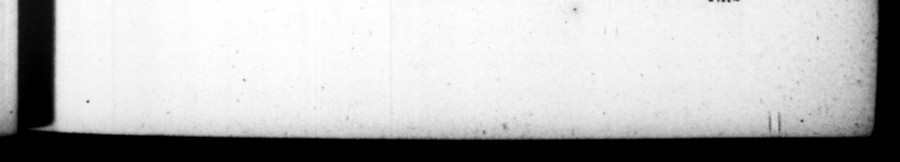

FR. LAT / „ / Hoon LTD h . * \ . N. rili toga Sed & I M. Antonio in epiſtolts per contumeliam feThurinus appellatur: & ſe nihil amplius —— mira · 7; ſe reſcribit, Pro : 0 Ms objici. ea E. oats, & deinde AUGUSTI cognomen aſſumfit : alterum reſtamento mais avunculi : alterum, cum qnibuſtam cenſentibus, Remulum appellari oportere, quali & winm itorem urbis, prevaluiſſer ut Aupotius vocaretur, non tantum novo ſed etiam ampliore cognomine : quod loca 2 religioſa, & in quiaugurato quid conſecra tur, ſis dicancur, - ab autFu, ab eviem geftu, uſtuve, ſicut etiam Ennius ſoribens, Auguſto augurio poſtqua By auguſt Augury when Rome was, built, 8. Quadrimus, patrem amiſit : duodecimum annum agens, aviam Juliam defunctam pro concione lauda davit. Quadriennio poſt vitoga ſumta, milicarihus d inis triumpho Cæſaris Afticano dunatus eſt, quamquam expers belli propter ætatem. Protectum. mox avunculum in Hiſpanias, adverſus Cn. Pompej1i liberos, vix tum firmus a gravi valetudine, per infeſtas heſtibus vias, pauciſſimis comitibus, naufragio etiam facto, ſubſecutus, magnopere demeruit, approbata cito etiam morum indole ſuitineris induſtriam. Cæare poſt receptas Hiſpanias expeditionem in Dacos, & inde in Parthos, deſtinante, premiſſus Apolloniam, ſtudiis vacavit. Urque primum occiſum eum, heredemque ſe comperic, q iu cunctatus, an prcxi. mas legiones imploraret, id quidem conſillum ut preps D. OCT A v. AUGUST. unatii Planci ſententia: 55 in bis be lehamber. He is ofen 760, by way of reproach, called Thin rinus b M. Anthory, in bis letters. To which he makes no ot her regs but only, that he wonders, he ſhould be ubraided with a former name of hi-, as matter of ſcandal. Afterwards te Auguſtus, che former from the Wi hns great unkle, aud the latter n 4 motten of Munatits Plas cus ts ſenate z when ſome propoſing to confer the name of Romulus upon bim, being as it wire a ſecona feunder of the city; it war © carned, that be ' afſumed the name of C. Ceſat, an4 — ſhould rather be callid Auguſtus,” 4 name that was mot only new, much more cinſiderable z becauſe religiaus places, and thoſe wherein any thing is cimſecrated Augary, are called Auguit, either from. the word auctu, or. ab avium geitu guſtuve, from the motion and feeding of bird, as appears from this line of Ennius. m inclyta condita Roma eſt. | | be mar but four yeare of age, and in big. twelfth year pronounced a funeral ratim in praiſe. of his. grand · mot her Juſia. Four years after took upon. him the manly habit, and was honoured with ſeveral, military preſ nts. by Ceſar, in his African triumph, 1:0". he was too young to te any ways c cerned in the war. Aftermaras when, his wnkle went for Spain agaiuſt the Sons of Pomp'y, the he was then ſcarce reco vered of 4 dangerius fi: of fockm:ſ7, yet he followed him, and after he had been ſhripwrecked at. ſea, gut up with him through roaas tha: were. bſet by the enemy, and with very few attendants whereby be very much won upon the aff«Fios of his unkle : But bi Ades the mettle he ſhewed upon this occaſſon he became ſtill acarer to him for the tukens be gave of a conſeder able genius. After the reductio of San, whilſt Ceſar was deſogning an expedition I the Dacant and Parthians, he was ſent before him ts Apollonia, where he followed his Srudies, till fai, g bis uikle was fiain, ard kh. mſilf It his keir, be Imt8, He loft his father when
